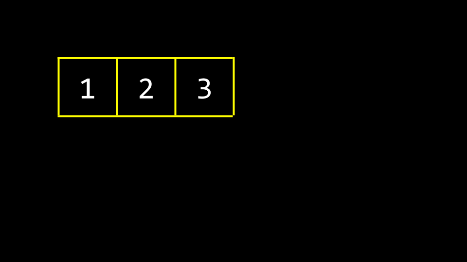
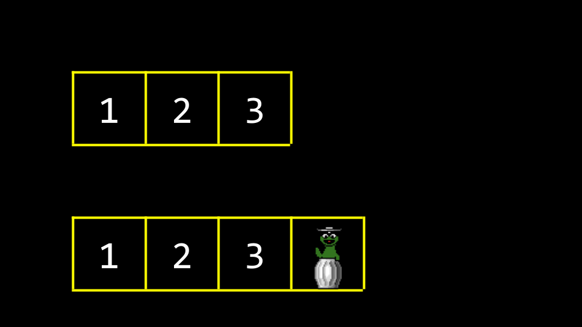
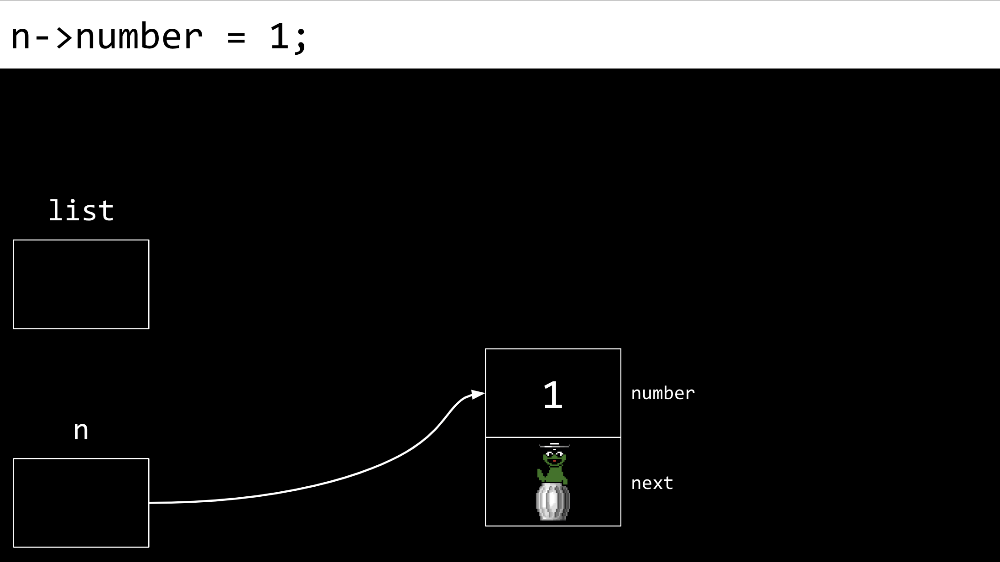
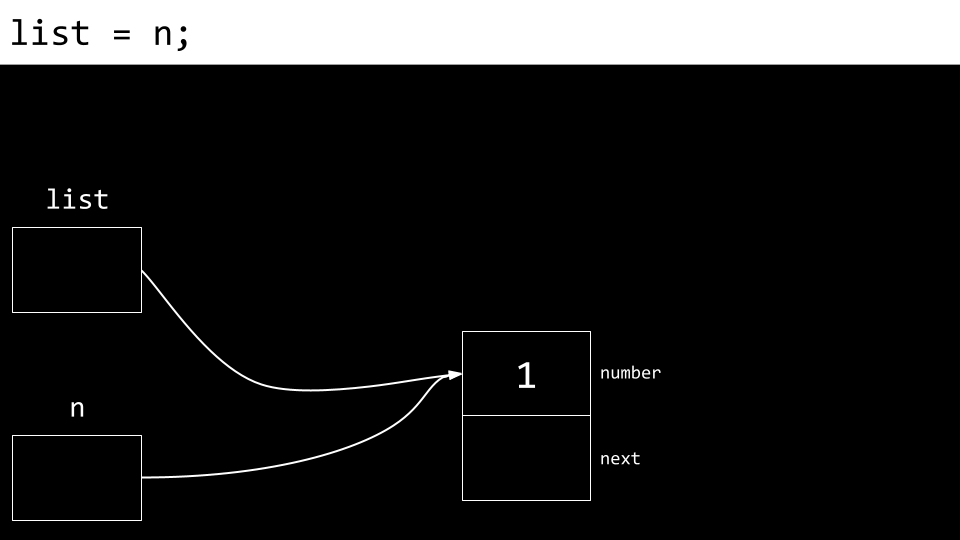
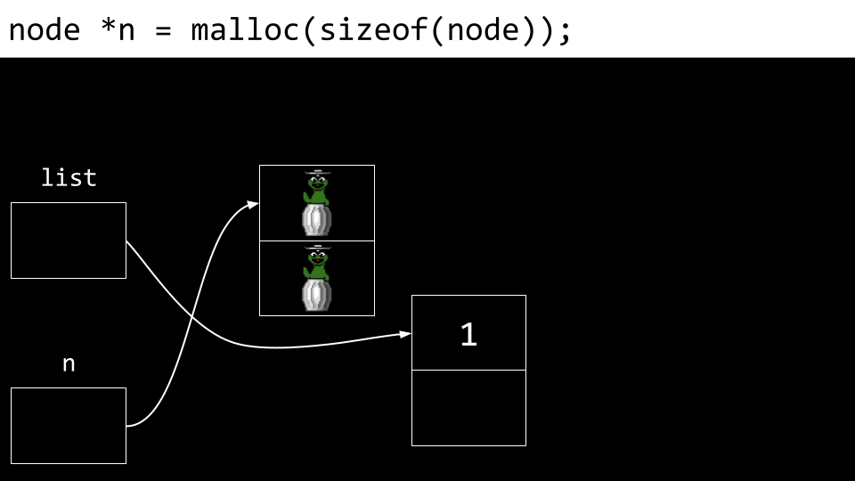
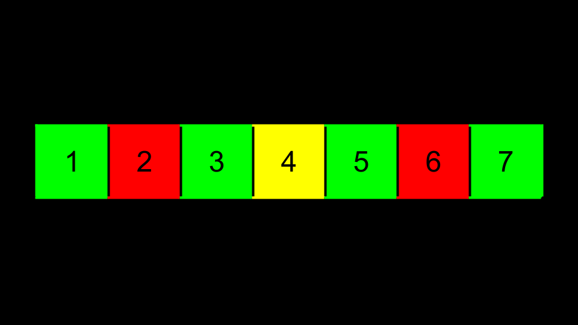
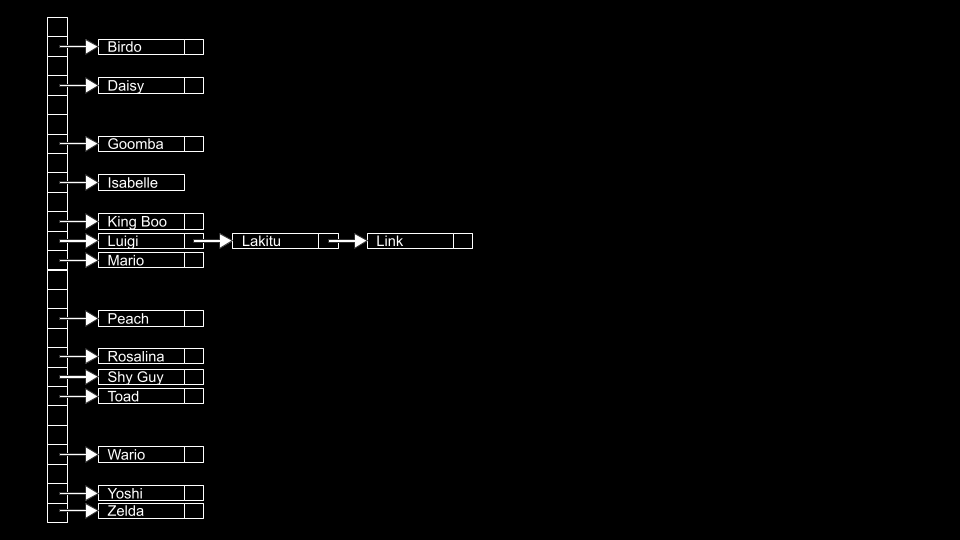
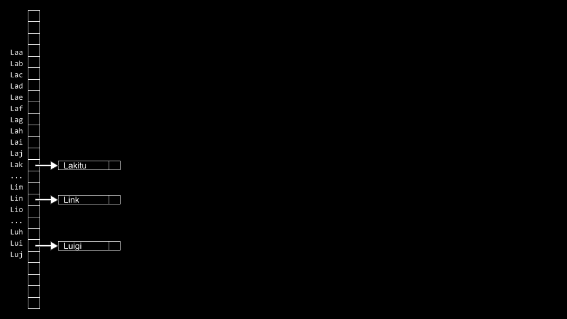
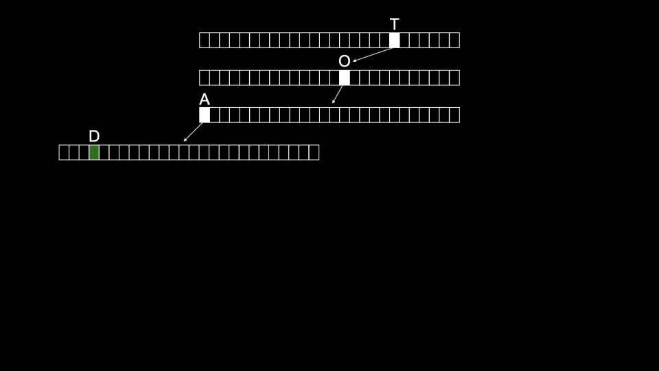
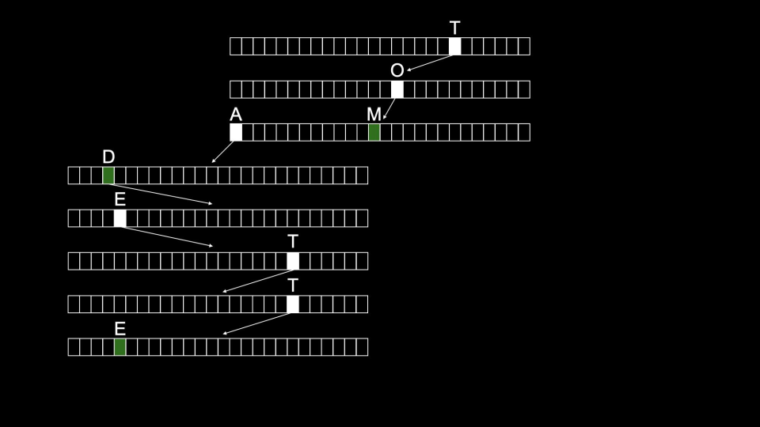

讲座 5
欢迎!
- 之前的几周课程向你介绍了编程的基本构建块。
- 你在C中学到的所有知识将使你能够在高级编程语言（如Python）中实现这些构建块。
- 每一周，概念都变得越来越具有挑战性，就像一座越来越陡峭的山丘。而这一周，随着我们探索数据结构，挑战趋于平缓。
- 到目前为止，你已经了解了数组如何在内存中组织数据。
- 今天，我们将讨论如何在内存中组织数据，以及随着你知识的增长而涌现出的设计可能性。
杰克学到了真相
- 我们观看了一个名为杰克学到了真相的视频，由埃隆大学的Shannon Duvall教授制作。
数据结构
- 数据结构本质上是内存中的组织形式。
- 有许多方式可以在内存中组织数据。
- 抽象数据类型是那些我们可以在概念上想象的类型。在学习计算机科学时，从这些概念性的数据结构开始通常很有用。学习这些将使你之后更容易理解如何实现更具体的数据结构。
队列
- 队列是抽象数据结构的一种形式。
- 队列具有特定的属性。即，它们是FIFO（先进先出）。你可以想象自己在游乐园排队等候游乐设施。队伍中的第一个人先乘坐，最后一个人最后乘坐。
- 队列有关联的特定操作。例如，一个项目可以被入队(enqueued)，即加入队伍或队列。此外，一个项目可以在到达队首时被出队(dequeued)或离开队列。
-
在代码中，你可以想象一个队列如下所示：
const int CAPACITY = 50; typedef struct { person people[CAPACITY]; int size; } queue;注意一个名为
people的数组的类型是person。CAPACITY是队列的最大容量。整数size是队列实际已满的程度，无论它能够容纳多少。
栈
- 队列与栈(stack)形成对比。从根本上说，栈的属性与队列不同。具体来说，它是LIFO（后进先出）。就像在餐厅叠托盘一样，最后放入栈中的托盘是第一个被拿起的。
- 栈有关联的特定操作。例如，push(压入)将某物放在栈顶。pop(弹出)是从栈顶移除某物。
-
在代码中，你可能会想象一个栈如下所示：
const int CAPACITY = 50; typedef struct { person people[CAPACITY]; int size; } stack;注意一个名为
people的数组的类型是person。CAPACITY是栈的最大容量。整数size是栈实际已满的程度，无论它能够容纳多少。注意这段代码与队列的代码相同。 - 你可能会认为上面的代码存在局限性，因为数组的容量在此代码中总是预先确定的。因此，栈可能总是过大。你可以想象在5000个位置中只使用栈中的一个位置。
- 如果我们的栈是动态的——能够随着项目的添加而增长——那就太好了。
数组
- 回到第 2 周，我们向你介绍了你的第一个数据结构。
- 数组是一块连续的内存。
-
你可以想象数组如下所示：

-
在你的终端中，输入
code list.c并编写如下代码：// Implements a list of numbers with an array of fixed size #include <stdio.h> int main(void) { // List of size 3 int list[3]; // Initialize list with numbers list[0] = 1; list[1] = 2; list[2] = 3; // Print list for (int i = 0; i < 3; i++) { printf("%i\n", list[i]); } }注意上面的代码与我们之前在课程中学到的非常相似。内存为三个项目预先分配。你可以在此处下载此代码。
- 如果我们能够将
4放在内存中的其他地方，那不是很好吗？根据定义，这不再是一个数组，因为4不再位于连续的内存中。我们如何连接内存中的不同位置？ -
在内存中，还有其他程序、函数和变量存储的值。其中许多可能是曾经被使用过但现在可供使用的未用垃圾值。

-
想象一下你想在我们的数组中存储第四个值
4。需要做的是分配一个新的内存区域，并将旧数组移动到新数组中。最初，这个新的内存区域将包含垃圾值。
-
随着值被添加到这个新的内存区域，旧的垃圾值将被覆盖。

-
最终，所有旧的垃圾值都将被我们的新数据覆盖。

- 这种方法的一个缺点是设计不佳：每次我们添加一个数字，都必须逐项复制数组。
-
基于我们最近获得的知识，我们可以利用对指针的理解来在这段代码中创建更好的设计。按如下方式修改你的代码：
// Implements a list of numbers with an array of dynamic size #include <stdio.h> #include <stdlib.h> int main(void) { // List of size 3 int *list = malloc(3 * sizeof(int)); if (list == NULL) { return 1; } // Initialize list of size 3 with numbers list[0] = 1; list[1] = 2; list[2] = 3; // List of size 4 int *tmp = malloc(4 * sizeof(int)); if (tmp == NULL) { free(list); return 1; } // Copy list of size 3 into list of size 4 for (int i = 0; i < 3; i++) { tmp[i] = list[i]; } // Add number to list of size 4 tmp[3] = 4; // Free list of size 3 free(list); // Remember list of size 4 list = tmp; // Print list for (int i = 0; i < 4; i++) { printf("%i\n", list[i]); } // Free list free(list); return 0; }注意创建了一个大小为三个整数的列表。然后，三个内存地址被赋值为
1、2和3。然后，创建了一个大小为四的列表。接下来，将列表从第一个复制到第二个。4的值被添加到tmp列表中。由于list指向的内存块不再被使用，它通过命令free(list)被释放。最后，list指针现在被指向tmp所指向的内存块。list的内容被打印出来然后释放。另外，注意包含了stdlib.h。你可以在此处下载此代码。 - 将
list和tmp都视为指向一块内存的标志是很有用的。如上例所示，list曾经指向一个大小为3的数组。到最后，list被指向一个大小为4的内存块。严格来说，在上述代码结束时，tmp和list都指向了同一个内存块。 -
我们可以在不使用for循环的情况下复制数组的一种方法是使用
realloc：// Implements a list of numbers with an array of dynamic size using realloc #include <stdio.h> #include <stdlib.h> int main(void) { // List of size 3 int *list = malloc(3 * sizeof(int)); if (list == NULL) { return 1; } // Initialize list of size 3 with numbers list[0] = 1; list[1] = 2; list[2] = 3; // Resize list to be of size 4 int *tmp = realloc(list, 4 * sizeof(int)); if (tmp == NULL) { free(list); return 1; } list = tmp; // Add number to list list[3] = 4; // Print list for (int i = 0; i < 4; i++) { printf("%i\n", list[i]); } // Free list free(list); return 0; }注意列表通过
realloc重新分配到一个新数组。你可以在此处下载此代码。 - 有人可能会倾向于为列表分配比所需多得多的内存，例如30个项目而不是所需的3或4个。然而，这是糟糕的设计，因为它会在可能不需要时消耗系统资源。此外，也无法保证最终确实需要超过30个项目的内存。
链表
- 在最近的几周中，你学到了三种有用的原语。一份
struct是一种你可以自己定义的数据类型。点表示法中的.允许你访问该结构内部的变量。*运算符用于声明指针或解引用变量。 - 今天，你将了解到
->运算符。它是一个箭头。这个运算符前往一个地址并查看结构内部。 - 链表是C语言中最强大的数据结构之一。链表允许你包含位于内存不同区域的值。此外，它们允许你根据需要动态地增长和缩小列表。
-
你可以想象三个值存储在三个不同的内存区域，如下所示：

- 如何将这些值在一个列表中拼接在一起？
-
我们可以想象上述数据如下所示：

-
我们可以利用更多的内存来使用指针追踪下一个项目的位置。

注意NULL被用来表示列表中没有其他下一个项目了。
-
按照惯例，我们会在内存中保留一个额外的元素，一个指针，用于追踪列表中的第一个项目，称为列表的头(head)。

-
抽象掉内存地址，列表将如下所示：

-
这些盒子被称为节点(nodes)。一个节点既包含一个项目，也包含一个名为下一页(next)的指针。在代码中，你可以想象一个节点如下所示：
typedef struct node { int number; struct node *next; } node;注意此节点中包含的项目是一个名为
number的整数。其次，包含了一个指向名为next的节点的指针，它将指向内存中某处的另一个节点。 -
我们可以重新创建
list.c来使用链表：// Start to build a linked list by prepending nodes #include <cs50.h> #include <stdio.h> #include <stdlib.h> typedef struct node { int number; struct node *next; } node; int main(void) { // 内存 for numbers node *list = NULL; // Build list for (int i = 0; i < 3; i++) { // Allocate node for number node *n = malloc(sizeof(node)); if (n == NULL) { return 1; } n->number = get_int("Number: "); n->next = NULL; // Prepend node to list n->next = list; list = n; } return 0; }首先，
node被定义为一个struct。对于列表的每个元素，通过malloc分配一个节点大小的内存。n->number（或n的数字字段）被赋值为一个整数。n->next（或n的下一页字段）被赋值为NULL。然后，该节点被放置在列表的开始处，即内存位置list。你可以在此处下载此代码。 -
概念上，我们可以想象创建链表的过程。首先，声明
node *list，但它有一个垃圾值。
-
接下来，一个名为
n的节点在内存中被分配。
-
接下来，该节点的
number被赋值为1。
-
接下来，该节点的
next字段被赋值为NULL。
-
接下来，
list被指向n所指向的内存位置。n和list现在指向同一个地方。
-
然后创建一个新节点。
number和next字段都被填充了垃圾值。
-
n的节点（新节点）的number值被更新为2。
-
同时，
next字段也被更新了。
-
最重要的是，我们不想失去与任何这些节点的连接，以免它们永久丢失。因此，
n的next字段被指向与list相同的内存位置。
-
最后，
list被更新为指向n。现在我们有了一个包含两个项目的链表。
- 查看我们的列表图示，我们可以看到最后添加的数字是列表中最先出现的数字。因此，如果我们按顺序从第一个节点开始打印列表，列表将显示为乱序。
-
我们可以按正确顺序打印列表如下：
// Print nodes in a linked list with a while loop #include <cs50.h> #include <stdio.h> #include <stdlib.h> typedef struct node { int number; struct node *next; } node; int main(void) { // 内存 for numbers node *list = NULL; // Build list for (int i = 0; i < 3; i++) { // Allocate node for number node *n = malloc(sizeof(node)); if (n == NULL) { return 1; } n->number = get_int("Number: "); n->next = NULL; // Prepend node to list n->next = list; list = n; } // Print numbers node *ptr = list; while (ptr != NULL) { printf("%i\n", ptr->number); ptr = ptr->next; } return 0; }注意
node *ptr = list创建了一个临时变量，指向list所指向的同一位置。while循环打印节点ptr所指向的内容，然后将ptr更新为指向列表中的next节点。你可以在此处下载此代码。 - 在这个例子中，插入列表的时间复杂度始终为O(1)，因为在列表前面插入只需要非常少量的步骤。
- 考虑到搜索此列表所需的时间，其时间复杂度为O(n)，因为在最坏的情况下，必须始终搜索整个列表才能找到某个项目。向列表添加新元素的时间复杂度取决于该元素添加的位置。下面的例子对此进行了说明。
- 链表不存储在连续的内存块中。只要有足够的系统资源，它们可以增长到你想要的大小。然而，缺点是比数组需要更多的内存来追踪列表。对于每个元素，你不仅要存储元素的值，还要存储指向下一个节点的指针。此外，链表不能像数组那样进行索引访问，因为我们需要遍历前n - 1个元素才能找到第n个元素的位置。因此，上图所示的列表必须进行线性搜索。所以，在如上构建的列表中无法进行二分搜索。
-
此外，你可以将数字放在列表的末尾，如下代码所示：
// Appends numbers to a link list #include <cs50.h> #include <stdio.h> #include <stdlib.h> typedef struct node { int number; struct node *next; } node; int main(void) { // 内存 for numbers node *list = NULL; // Build list for (int i = 0; i < 3; i++) { // Allocate node for number node *n = malloc(sizeof(node)); if (n == NULL) { return 1; } n->number = get_int("Number: "); n->next = NULL; // If list is empty if (list == NULL) { // This node is the whole list list = n; } // If list has numbers already else { // Iterate over nodes in list for (node *ptr = list; ptr != NULL; ptr = ptr->next) { // If at end of list if (ptr->next == NULL) { // Append node ptr->next = n; break; } } } } // Print numbers for (node *ptr = list; ptr != NULL; ptr = ptr->next) { printf("%i\n", ptr->number); } // Free memory node *ptr = list; while (ptr != NULL) { node *next = ptr->next; free(ptr); ptr = next; } return 0; }注意这段代码如何向下遍历此列表直到找到尾部。当追加一个元素（添加到列表末尾）时，我们的代码将以O(n)的时间复杂度运行，因为我们必须遍历整个列表才能添加最后一个元素。另外，注意一个名为
next的临时变量被用来追踪ptr->next。你可以在此处下载此代码。 -
此外，你可以在添加项目时对你的列表进行排序：
// Implements a sorted linked list of numbers #include <cs50.h> #include <stdio.h> #include <stdlib.h> typedef struct node { int number; struct node *next; } node; int main(void) { // 内存 for numbers node *list = NULL; // Build list for (int i = 0; i < 3; i++) { // Allocate node for number node *n = malloc(sizeof(node)); if (n == NULL) { return 1; } n->number = get_int("Number: "); n->next = NULL; // If list is empty if (list == NULL) { list = n; } // If number belongs at beginning of list else if (n->number < list->number) { n->next = list; list = n; } // If number belongs later in list else { // Iterate over nodes in list for (node *ptr = list; ptr != NULL; ptr = ptr->next) { // If at end of list if (ptr->next == NULL) { // Append node ptr->next = n; break; } // If in middle of list if (n->number < ptr->next->number) { n->next = ptr->next; ptr->next = n; break; } } } } // Print numbers for (node *ptr = list; ptr != NULL; ptr = ptr->next) { printf("%i\n", ptr->number); } // Free memory node *ptr = list; while (ptr != NULL) { node *next = ptr->next; free(ptr); ptr = next; } return 0; }注意这个列表在构建时是如何被排序的。为了按此特定顺序插入元素，我们的代码每次插入仍然以O(n)运行，因为在最坏的情况下我们必须查看所有当前元素。你可以在此处下载此代码。
-
作为最后的润色，你可以创建一个函数来释放链表：
// Frees memory in cases of error too #include <cs50.h> #include <stdio.h> #include <stdlib.h> typedef struct node { int number; struct node *next; } node; void unload(node *list); int main(void) { // 内存 for numbers node *list = NULL; // Build list for (int i = 0; i < 3; i++) { // Allocate node for number node *n = malloc(sizeof(node)); if (n == NULL) { unload(list); return 1; } n->number = get_int("Number: "); n->next = NULL; // If list is empty if (list == NULL) { list = n; } // If number belongs at beginning of list else if (n->number < list->number) { n->next = list; list = n; } // If number belongs later in list else { // Iterate over nodes in list for (node *ptr = list; ptr != NULL; ptr = ptr->next) { // If at end of list if (ptr->next == NULL) { // Append node ptr->next = n; break; } // If in middle of list if (n->number < ptr->next->number) { n->next = ptr->next; ptr->next = n; break; } } } } // Print numbers for (node *ptr = list; ptr != NULL; ptr = ptr->next) { printf("%i\n", ptr->number); } // Free memory unload(list); return 0; } void unload(node *list) { node *ptr = list; while (ptr != NULL) { node *next = ptr->next; free(ptr); ptr = next; } }注意
unload函数释放了整个列表。你可以在此处下载此代码。 - 这段代码可能看起来很复杂。然而，请注意，通过指针和上述语法，我们可以将数据拼接在内存中的不同位置。
树
- 数组提供了可以快速搜索的连续内存。数组还提供了进行二分搜索的机会。
- 我们能否结合数组和链表两者的优点？
- 二分搜索树是另一种可用于更高效存储数据以便搜索和检索的数据结构。
-
你可以想象一个已排序的数字序列。

-
然后想象中间的值成为树的顶部。小于此值的放在左边，大于此值的放在右边。

-
然后可以使用指针指向每个内存区域的正确位置，从而使每个节点可以连接起来。

-
在代码中，搜索这样的树可以实现如下：
bool search(node *tree, int number) { if (tree == NULL) { return false; } else if (number < tree->number) { return search(tree->left, number); } else if (number > tree->number) { return search(tree->right, number); } else if (number == tree->number) { return true; } }注意这个搜索函数递归地搜索树。如果搜索的数字小于当前节点的数字，它会搜索左子树。如果大于，则搜索右子树。这种递归方法允许高效的搜索，当树平衡时时间复杂度为O(log n)。
- 树提供了数组所不具备的动态性。它可以按照我们的意愿增长和缩小。
- 此外，当树平衡时，这种结构提供O(log n)的搜索时间。
哈希与哈希表
-
算法时间复杂度的圣杯是O(1)或常数时间。也就是说，最终目标是实现即时访问。

- 哈希(Hashing)是获取一个值并能够输出一个值，该值后来成为通向它的快捷方式的概念。
- 例如，对apple进行哈希可能会得到值
1，而berry可能被哈希为2。因此，找到apple就像询问哈希算法apple存储在哪里一样简单。虽然在设计上并不理想，但最终将所有以a开头的放在一个桶中，以b开头的放在另一个桶中，这种将哈希值分桶的概念说明了你可以如何使用这个概念：一个哈希值可用于快捷地找到这样的值。 - 哈希函数是一种将较大值缩减为小而可预测值的算法。通常，此函数接收你想要添加到哈希表中的项目，并返回一个整数，表示该项目应放置的数组索引。
- 哈希表是数组和链表的一个极佳组合。在代码实现中，哈希表是一个由指向节点(node)的指针组成的数组。
-
哈希表可以被想象如下：

注意这是一个为字母表每个值分配了一个位置的数组。
-
然后，在数组的每个位置，使用一个链表来追踪存储在那里的每个值：

- 冲突(Collisions)是指当你向哈希表添加值时，哈希位置已有其他内容存在。在上述情况下，冲突只是简单地追加到列表的末尾。
-
冲突可以通过更好地编程你的哈希表和哈希算法来减少。你可以想象对上述情况的改进如下：

-
考虑以下哈希算法的示例：

-
可以在代码中实现如下：
#include <ctype.h> unsigned int hash(const char *word) { return toupper(word[0]) - 'A'; }注意哈希函数如何返回
toupper(word[0]) - 'A'的值。 - 作为程序员，你必须在使用更多内存来拥有更大的哈希表从而可能减少搜索时间，与使用更少内存但可能增加搜索时间之间做出决定。
- 这种结构提供O(n)的搜索时间。
字典树
- 字典树是另一种形式的数据结构。字典树是由数组构成的树。
- 字典树总是可以在常数时间内搜索。
- 字典树的一个缺点是它们往往占用大量内存。注意我们只需要26 \times 4 = 104个节点来存储Toad!
-
Toad的存储方式如下：

-
Tom的存储方式如下：

- 这种结构提供O(1)的搜索时间。
- 这种结构的缺点是需要使用大量的资源。
总结
在这节课中，你学习了关于使用指针来构建新的数据结构。具体来说，我们深入探讨了……
- 数据结构
- 栈和队列
- 链表
- 哈希与哈希表
- 字典树
下次见!